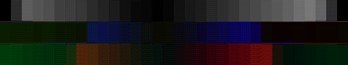
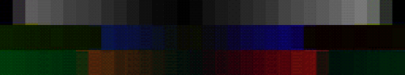

Old (yuv444p8_scaled_jpeg_mpeg.png)

Diff (old-new) yuv444p8_scaled_jpeg_mpeg.png

With patch (yuv444p8_scaled_jpeg_mpeg.png)
Old (yuv444p8_scaled_unspec_mpeg.png)

Diff (old-new) yuv444p8_scaled_unspec_mpeg.png

With patch (yuv444p8_scaled_unspec_mpeg.png)
Old (yuv444p8_scaled_unspec_unspec.png)

Diff (old-new) yuv444p8_scaled_unspec_unspec.png
With patch (yuv444p8_scaled_unspec_unspec.png)

Old (yuv444p8_unscaled_jpeg_mpeg.png)

Diff (old-new) yuv444p8_unscaled_jpeg_mpeg.png
With patch (yuv444p8_unscaled_jpeg_mpeg.png)

Old (yuv444p8_unscaled_unspec_mpeg.png)

Diff (old-new) yuv444p8_unscaled_unspec_mpeg.png
With patch (yuv444p8_unscaled_unspec_mpeg.png)

Old (yuv444p8_unscaled_unspec_unspec.png)

Diff (old-new) yuv444p8_unscaled_unspec_unspec.png
With patch (yuv444p8_unscaled_unspec_unspec.png)
Bit depth 10
Old (yuv444p10_scaled_jpeg_mpeg.png)

Diff (old-new) yuv444p10_scaled_jpeg_mpeg.png
With patch (yuv444p10_scaled_jpeg_mpeg.png)
Old (yuv444p10_scaled_unspec_mpeg.png)
Diff (old-new) yuv444p10_scaled_unspec_mpeg.png
With patch (yuv444p10_scaled_unspec_mpeg.png)

Old (yuv444p10_scaled_unspec_unspec.png)
Diff (old-new) yuv444p10_scaled_unspec_unspec.png
With patch (yuv444p10_scaled_unspec_unspec.png)

Old (yuv444p10_unscaled_jpeg_mpeg.png)
Diff (old-new) yuv444p10_unscaled_jpeg_mpeg.png
With patch (yuv444p10_unscaled_jpeg_mpeg.png)
Old (yuv444p10_unscaled_unspec_mpeg.png)
Diff (old-new) yuv444p10_unscaled_unspec_mpeg.png
With patch (yuv444p10_unscaled_unspec_mpeg.png)

Old (yuv444p10_unscaled_unspec_unspec.png)
Diff (old-new) yuv444p10_unscaled_unspec_unspec.png
With patch (yuv444p10_unscaled_unspec_unspec.png)